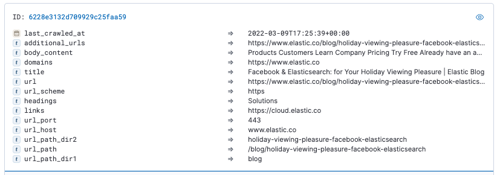

Getting started: Build a custom search engine experience with Elastic Enterprise Searchedit
This guide introduces you to Elastic App Search, a set of APIs and dashboards that you can use to build a highly scalable and tunable search engine experience into your applications and websites. App Search is packaged with Workplace Search as a single solution named Elastic Enterprise Search.
In this guide, you’ll learn how to deploy an instance of App Search in Elastic Cloud, configure it to crawl a website, perform some query relevance tuning, and launch a standalone search UI.
If you prefer video tutorials, check out the Web Crawler Quick-Start and App Search How-to Series
Prerequisitesedit
To get started, all you need is an internet connection, an email address, and about an hour.
For the optional Step 7, to run your search experience locally you need to have npm installed.
Step 1: Create an Elastic Cloud deploymentedit
An Elastic Cloud deployment offers you all of the features of the Elastic Stack as a hosted service. To test drive your first deployment, sign up for a free Elastic Cloud trial:
- Go to our Elastic Cloud Trial page.
-
Enter your email address and a password.

-
After you’ve logged in, you can directly create a deployment. Give your deployment a name and select Create deployment.

-
While the deployment sets up, make a note of your
elasticsuperuser password and keep it in a safe place. - Once the deployment is ready, select Continue. At this point, you access Kibana and are prompted to Add integrations or to Explore on your own. Feel free to check the various options and integrations available. You can return to the home page of Kibana at any time by selecting the Elastic logo.
Your Elastic Cloud deployment comes pre-configured with Enterprise Search, which includes both App Search and Workplace Search.
Step 2: Create a web crawler configurationedit
A web crawler configuration is part of an Enterprise Search Engine. An Engine contains everything you need to crawl a website and build a search engine experience. For this example, you’ll use a crawler to search and ingest the Elastic blogs.
- When prompted to Start by adding integrations, select Add integrations and choose Web site crawler. You can also get to the integrations page from the Kibana home page.
-
Give your engine a name, for example
elastic-blogs. -
Set the Engine language to
Englishand select Create engine. -
On the Web Crawler page, set the Domain URL to
https://www.elastic.co/and then Validate Domain. The crawler stays in this domain while it discovers content and the validation checks for potential problems. For this guide, you can ignore any indexing restrictions that are reported. - Select Add domain.
-
Choose where the crawler should start. Select Edit and append
blog/to the domain URL:https://www.elastic.co/blog/.
Step 3: Add some crawl rulesedit
Crawl rules determine which pages to search within the domain. The crawler checks each page URL against the crawl rules, in order from top to bottom. When a URL matches a path pattern and rule, the policy is applied to either crawl or skip the page.
Add the following crawl rules:
-
Policy
Disallow, ruleRegex, path pattern.* -
Policy
Allow, ruleBegins with, path pattern/blog/ -
Policy
Disallow, ruleBegins with, path pattern/blog/author -
Policy
Disallow, ruleBegins with, path pattern/blog/category

The order of the rules is important. You can drag and drop the rows to adjust as needed. The final rule in the list can’t be moved. It indicates that by default all pages in the domain are searched, so all of the crawl rules that you add are applied before it.
Following these rules, the crawler will skip the /blog/author and /blog/category directories and everything else in the https://www.elastic.co/ domain, checking only the /blog/ directory. Check Manage crawl rules to learn more.
Step 4: Start crawlingedit
Let’s start crawling! There are a lot of Elastic blogs so this step takes 15 - 20 minutes.
- Select Start a crawl > Crawl all domains on this engine.
-
As the crawl proceeds, visit the Documents page to check what has been indexed so far. Each record includes a document’s unique ID, a list of indexed fields, and the field contents.
 - Next, from the Kibana menu, go to Observability > Logs to monitor the web crawling activity as a live stream.
-
Search for
indexed. Entries are shown for pages in the/blog/directory that were successfully crawled and ingested into your deployment:Indexed the document into App Search with doc_id=622827583d8203857b45e77b -
Search for
denied. An entry appears for each page that was skipped, and the log message indicates the crawl rule by which the page was excluded:Denied by crawl rule: domain=https://www.elastic.co policy=deny rule=regex pattern=.*These log entries help you to fine tune your crawling rules, so that you can include only relevant parts of a website in your search engine experience. It may take a few test crawls to get things exactly right.
Step 5: Do some relevance tuningedit
Now that the crawl has completed and the website documents have been indexed into your deployment, you can perform some relevance tuning. This ensures that your users get the best possible results for their search queries.
- Open the Relevance Tuning page.
- In the Preview pane, type in a search term, for example "tuning".
-
Check the search results. If you expect that users will find the results with the word
tuningin the title field more important, then consider adjusting the weight of that field. - In Manage fields, find the title and open the collapsed section.
- Use the slider to adjust the weight level while watching the search results. Notice that as the weight of title is increased the results change.
- Use the Save and Restore buttons at the top of the Relevance Tuning page to save or undo your changes.
The tuning procedure is something that you’ll want to come back to on a regular basis, both as the website develops and as the type of results that you want to highlight to your audience change. To learn more, check Relevance Tuning Guide, Weights and Boosts.
Step 6: Configure your search experienceedit
The query results are optimized, so it’s now time to set up your search experience.
- Open the Search UI page.
- In the Filter fields menu, select headings.
- In the Sort fields menu, select title.
-
Leave all other fields at their defaults and select Generate search experience. A new tab opens show a fully built search experience based on the set of indexed documents.

-
Test out a few queries, and note some of the powerful search features, all of which you can customize for your users:
- Search results can be sorted by titles or by any other field.
- Results can be filtered into configurable buckets.
- Typeahead query suggestions help guide users to the most effective search terms.
- Queries with truncated or misspelled terms still produce highly relevant results.
Step 7 (Optional): Run your search experience locallyedit
You’re now ready to run the search experience on your local system.
- On the generated search experience page, select Download.
-
Save and then open up the package. The
src/config/engine.jsonfile contains all of the configuration settings, already pre-configured, and the setting options are listed in the README file. -
Open a terminal window and
cdinto the package directory. -
Run
npm installto set everything up. -
Run
npm startto launch the application.
You should now have a fully customizable search engine experience. Try a few queries to test it out. Just in case you run into any problems, you can check the search-ui project repository or the App Search Troubleshooting documentation.
Step 8: Access search analyticsedit
As a final step, open the App Search Analytics page. This is your tool to gain insight into how people are interacting with the search experience that you built.
A cumulative table and graph shows you total queries, queries with no results, and total clicks, to help you to understand how the search experience is performing.
You can drill down into the query analytics to learn:
- What people are most often searching for
- How often they follow through by clicking on search results
- What search terms aren’t generating any results
These analytics are a powerful tool to help you to learn about your users' search experience so that you can continually optimize the search results to match their needs.
What’s next?edit
Learn more about Elastic App Search
- To learn more, check the main Getting started page in the App Search documentation, as well as our collection of Guides.
- All of the features described here are available through the App Search API. Check our API Reference to learn more.
- Ready to move to production? We recommend setting up Monitoring.
Learn about other Elastic solutions and features
- Want to gain insight into how your applications are running? Try out Elastic Observability.
- Want Elastic to do the heavy lifting? Use machine learning to detect anomalies.
- Want to protect your endpoints from security threats? Try Elastic Security. Adding endpoint protection is just another integration that you add to the agent policy!